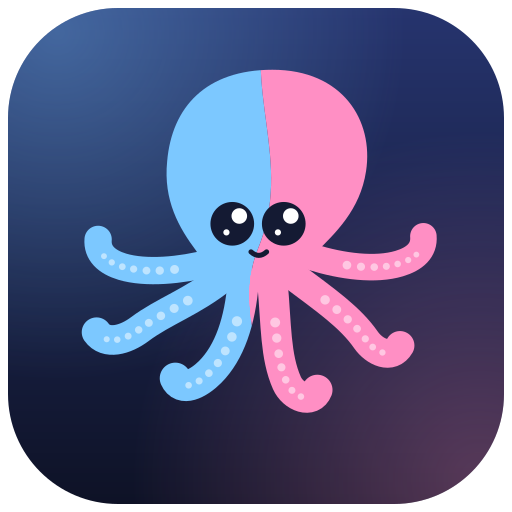
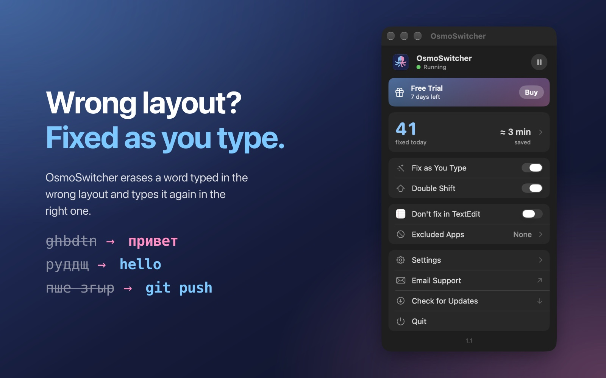
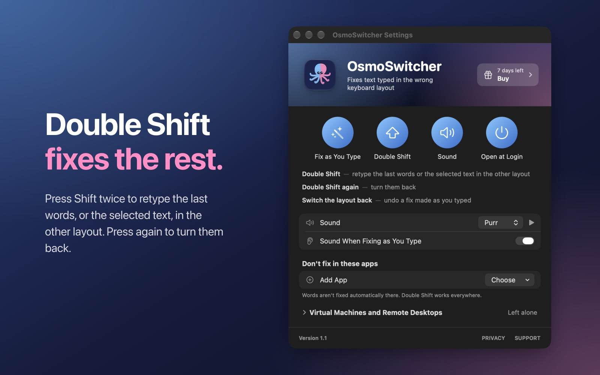
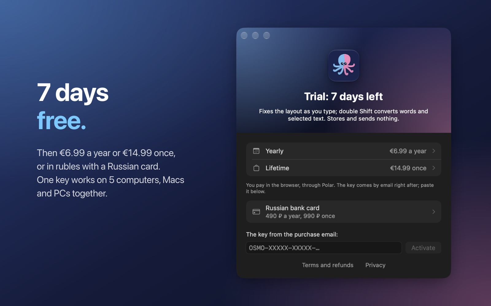
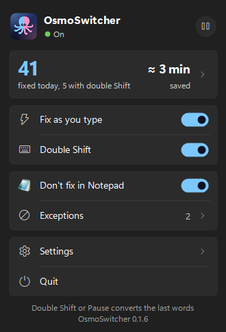
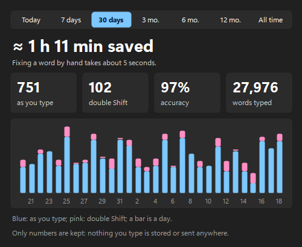
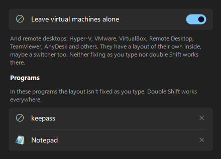

For Mac and Windows
Typed in the wrong layout? It's fixed.
OsmoSwitcher notices a word typed in the wrong keyboard layout as you type it, erases it and types it again in the right one: ghbdtn becomes привет, руддщ becomes hello.
Fixes words as you type
A small model built into the app reads the whole line, so abbreviations, commands and names typed on purpose stay as they are. In a terminal, пше згыр becomes git push.
Double Shift
Converts the last words, or the selected text, to the other layout. Only the words that read wrong are changed. Press it again to turn them back.
Private by design
No account, no ads. Nothing you type is stored or sent anywhere. Privacy Policy
What it handles
- Words you meant. Abbreviations, commands, names and code stay as typed: the model reads the whole line, not one word.
- Terminals. пше згыр becomes git push, ыыр becomes ssh.
- Remote desktops and virtual machines. RDP, Parallels, VMware, VirtualBox, TeamViewer: the window of the remote computer is left to the layout inside it, so the two never fight. Install OsmoSwitcher there too, and it fixes words on that side.
- Selected text. On the Mac, select a line typed in the wrong layout and press Shift twice.
- Changing your mind. Switch the layout back right after a fix, or press Shift twice again, and the word returns as typed.
- Sound. On the Mac, a short sound when words are converted, and on fixes if you like.
- Passwords. On the Mac, password fields are hidden from the app by macOS itself.
- Programs of your choice. Add any app to the exceptions, or pause OsmoSwitcher from its menu.
On the Mac



On Windows
Microsoft Store Installer · Intel/AMD Installer · ARM



Pricing
Mac
Free for 7 days, then a license key bought on this site, the same as for Windows: a yearly subscription (6,99 €) or a one-time purchase (14,99 €) through Polar, or in rubles with a Russian bank card. One key works on 5 computers, Macs and PCs together. Terms and refunds
Windows
Free for 7 days, then a license key bought on this site: a yearly subscription (6,99 €) or a one-time purchase (14,99 €), bought here. Payment is handled by our online reseller, Polar, the merchant of record. Paying with a Russian bank card? Buy in rubles. Terms and refunds
For teams
OsmoSwitcher keeps what people type on their computers. The only thing that goes out is the license check, about once a day: the key and an activation id; the Mac version also looks for updates on this site. Keys for a team, an invoice for the company: write to octoosmo@gmail.com.
A free key for the first 100 users
A lifetime key, for Mac and Windows, free. In return, a request: if a word is fixed wrong or something is missing, write to us.
Для Mac и Windows
Набрали не в той раскладке? Уже исправлено.
OsmoSwitcher замечает слово, набранное не в той раскладке, прямо во время набора, стирает его и печатает заново в нужной: ghbdtn становится привет, руддщ — hello.
Исправляет слова на лету
Встроенная в приложение небольшая модель читает всю строку, поэтому сокращения, команды и имена, набранные намеренно, остаются как есть. В терминале пше згыр становится git push.
Двойной Shift
Переводит последние слова или выделенный текст в другую раскладку. Меняются только слова, набранные не в той раскладке. Нажмите ещё раз — вернутся обратно.
Конфиденциально
Без аккаунта и рекламы. Ничего из набранного не сохраняется и никуда не отправляется. Политика конфиденциальности
Что умеет
- Не трогает нужное. Сокращения, команды, имена и код остаются как набраны: модель читает всю строку, а не одно слово.
- Терминал. пше згыр становится git push, ыыр — ssh.
- Удалённые столы и виртуальные машины. RDP, Parallels, VMware, VirtualBox, TeamViewer: окно удалённого компьютера остаётся раскладке внутри него, так что они не спорят. Поставьте OsmoSwitcher и туда — он будет исправлять слова на той стороне.
- Выделенный текст. На Mac выделите строку, набранную не в той раскладке, и дважды нажмите Shift.
- Передумали. Переключите раскладку сразу после исправления или ещё раз дважды нажмите Shift — слово вернётся как было.
- Звук. На Mac — короткий звук при переводе слов, а по желанию и при исправлении.
- Пароли. На Mac поля паролей скрывает от приложения сама macOS.
- Исключения. Любую программу можно добавить в исключения или поставить OsmoSwitcher на паузу.
На Mac
На Windows
Microsoft Store Установщик · Intel/AMD Установщик · ARM
Цены
Mac
7 дней бесплатно, затем лицензионный ключ на этом сайте, такой же, как для Windows: подписка на год (6,99 €) или покупка навсегда (14,99 €) через Polar — или в рублях картой российского банка. Один ключ работает на 5 компьютерах, Mac и Windows вместе. Условия и возврат
Windows
7 дней бесплатно, затем лицензионный ключ на этом сайте: подписка на год (6,99 €) или покупка навсегда (14,99 €) через Polar — или в рублях картой российского банка. Условия и возврат
Для организаций
OsmoSwitcher оставляет набранное на компьютере. Наружу уходит только проверка ключа, примерно раз в день: сам ключ и номер активации; версия для Mac ещё проверяет обновления на этом сайте. Ключи на команду, счёт для компании — пишите на octoosmo@gmail.com.
Бесплатный ключ первым 100 пользователям
Ключ навсегда, для Mac и Windows, бесплатно. Взамен — просьба: если слово исправилось не так или чего-то не хватает, напишите нам.